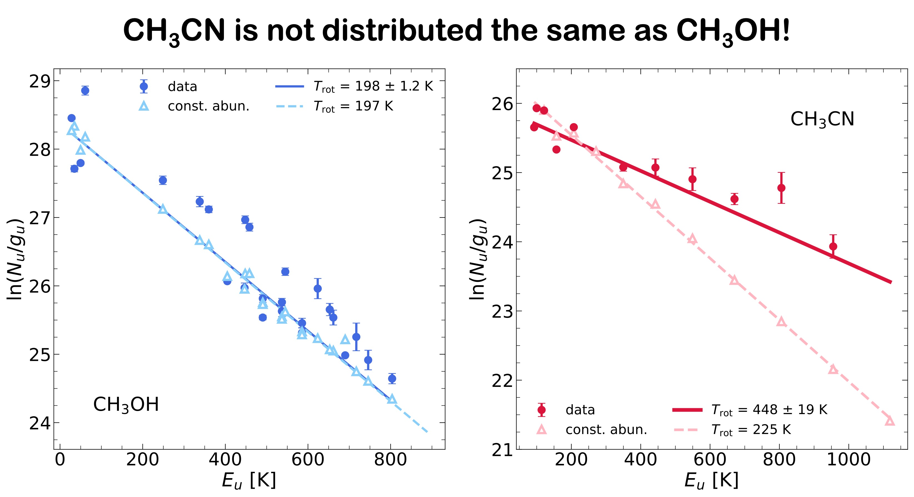
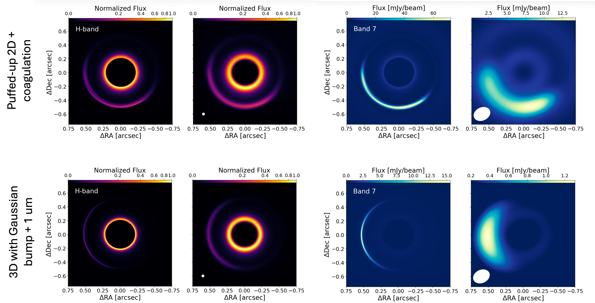

Current projects:
Following the Water Trail in Planet-forming Disks
The water D/H serves as a fingrprint for understanding the origin of solar system water. Observations of the water D/H in minor solar system bodies like meteorites and comets, the building blocks of planets, may indicate the presence of a radial gradient in water D/H. These are broadly in line with base chemical theory that states fractionation (which serves to raise the water D/H) is efficient further from the Sun, where temperatures are lower. Previous models of the water D/H in solar nebula attmepting to recreate the radial gradient in water D/H typically invoke isotopic exchange reactions that can only occur in hot, dense gas. In an azimuthally-symmetric 3D simulation of coupled hydrodynamical and chemical evolution of water in a median, class I disk, we find that those high-temperature isotopic exchange reactions are insignificant in the chemical evolution of water. Instead, we find the the gas-phase processing of water in the surface of the disk, the concentration gradient diffusion down to the midplane, and the interplay between vapor and radially drifting icy pebbels drives an order of magnitude decrease in the water D/H within the water snowline. This serves as a cold disk route in producing the isotopic signatures observed in the building blocks of planets.
Diffusive origin of midplane O2
The ROSINA-DFMS mass spectrometer aboard the Rosetta spacecraft measured abundant molecular oxygen in the coma of comet 67P/Cheryumov-Gerasimenko (67P). This discovery is counter to the typically observed molecules, like H2O, CO, and CO2, that are typically thought to comprise the majority of coma gas. While there are several natural explanations for this enhanced abundance of O2 within cometary nuclei, 1D disk models have difficulty producing such a result. In our 3D simulations with coupled hydrodynamical and chemical evolution within a median, young planet forming disk, we find that abundant midplane molecular oxygen is a natural byproduct and outcome of photoionziation of water in the surface of the disk, concentration gradient diffusion, and cold temperature water chemistry. Near the midplane water snowline, we see the highest concentrations of O2 and see O2/H2O ratios surpass unity and drop propitiously past the water snowline. Furthermore, the O2 vapor is subject to the viscous spreading and can reach radii of ~100 au. As the vapor is pushed past the O2 snowline, it can condense into O2 ice, which may be incorporated into cometary nuclei. This mechanism provides a diffusive means by which comets like 67P may have obtained abundant O2.
Exploration the ionization impacts on simualted snowlines
Ionization plays a critical role in establishing the rapid ion-molecule chemistry of water formation. As opposed to UV radiation, cosmic rays (and X-rays) are especially important at ionizing molecules deep within the heart of protoplanetary disks. It is, however, difficult to directly constrain the ionization strength a priori from disk observations. In combined, chemodynamical simulations of a median class I disk with and without hydrodynamical motion of gas, dust, and ice, however, we find that the water snowline--that is the location in the disk where the water vapor and ice abundances are equal--is sensitive to the cosmic ray ionization strength. Cosmic rays that are 100x stronger than the fiducial value can efficiently punch a hole through the water snowline in static models, carving a gap in the water vapor and ice midplane abundance profiles on the scale of 10^5 years. Models with pebble drift and concentration gradient diffusion of molecular species does not exhibit the same behavior. Thus, it is believed the influx of water vapor from the sublimation of drifting icy pebbles serves to buffer the otherwise unstable destruction of the water snowline by cosmic rays.
Past projects:
Chemical Abundance Gradients of Organic Molecules within a Protostellar Disk

Observations of low-mass protostellar systems show evidence of rich, complex organic chemistry. Their low luminosity, however, makes determining abundance distributions of complex organic molecules within the water snowline challenging. However, the excitation conditions sampled by differing molecular distributions may produce substantive changes in the resulting emission. Thus, molecular excitation may recover spatial information from spatially unresolved data. By analyzing spatially unresolved NOrthern Extended Millimeter Array observations of CH3OH and CH3CN, we aim to determine if CH3OH and CH3CN are distributed differently in the protostellar disk around HOPS-370, a highly luminous intermediate-mass protostar. Rotational diagram analysis of CH3OH and CH3CN yields rotational temperatures of 198 ± 1.2 K and 448 ± 19 K, respectively, suggesting the two molecules have different spatial distributions. Source-specific 3D LTE radiative transfer models are used to constrain the spatial distribution of CH3OH and CH3CN within the disk. A uniform distribution with an abundance of 4 × 10−8 reproduces the CH3OH observations. In contrast, the spatial distribution of CH3CN needs to be either more compact (within ∼120 au versus ∼240 au for CH3OH) or exhibit a factor of ≳15 increase in abundance in the inner ∼55 au. A possible explanation for the difference in spatial abundance distributions of CH3OH and CH3CN is carbon-grain sublimation.
Investigating the Structure of Vortices in Protoplanetary Disks using Radiative Transfer Modelling

Protoplanetary disks, being the intermediate remnants of collapsed clouds of interstellar gas and dust, are harbingers and laboratories of planet formation. Recent observations by the Atacama Large Millimeter Array (ALMA) and the Spectro-Polarimetric High-contrast Exoplanet REsearch (SPHERE) instrument have illustrated complex asymmetric substruc- tures in disks, which are expected to be the significant concentration of dust mass trapped in vortices. These vortices are present in observations of scattered light, but absent in the shorter wavelength bands of ALMA, which partially defies expectations. Using radiative transfer modelling techniques allows for the structure of vortices to be understood.
Vortices in protoplanetary disks are natural environments in which the inward radial drift of dust particles can be overcome, dust concentration can begin, and the streaming instability can potentially form planetesimals. In conjunction with RADMC3D modelling of temperature profiles, the structure of vortices in protoplanetary disks is investigated using a two-pronged approach of multi-dimensional hydrodynamical simulations with and without the inclusion of dust coagulation.
In my Masters thesis, I used 2D and 3D simulations of protoplanetary disks using the Los Alamos - Computational Astro- physics Suite (LA-COMPASS). Coagulation of hundreds of dust species were incorporated in the 2D planet-disk simulations, with a disk that was puffed-up assuming vertical isothermal disk structure. These were compared with 3D simulations in which no dust coagulation was included. Output of both sets of simulations were then incorporated into RADMC3D and the brightness profiles of the disks were constructed. Comparing the brightness profiles of both simulations allows for the structure of vortices to be better understood within the context of the ALMA and SPHERE observations.